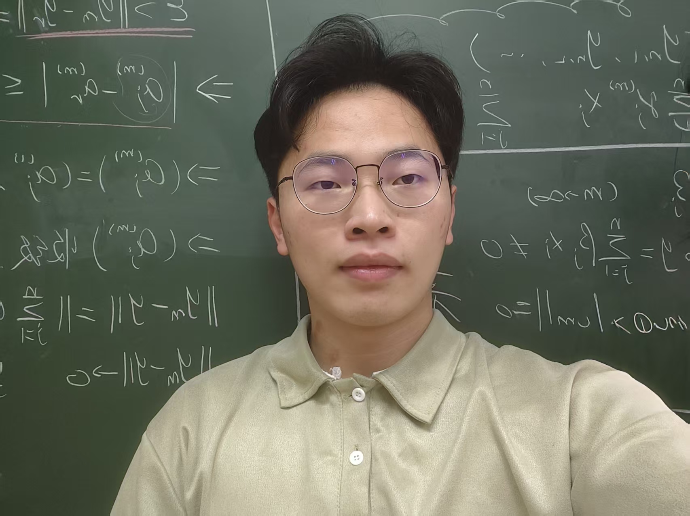
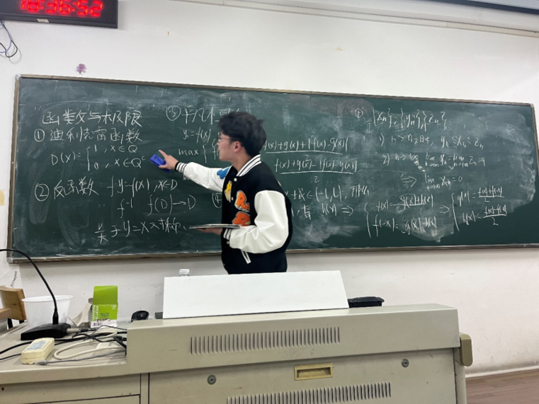

华东师范大学 · 教育技术学
教育信息技术学系学术型硕士，推免入学；GPA 3.47/4。硕士导师：吴永和 研究员 ↗
Educational technology · Learning sciences
我是徐俊，华东师范大学教育技术学硕士研究生。我的研究聚焦教育人工智能、学习分析与自我调节学习，关注智能系统如何支持学习者形成可迁移的能力。

Research atlas
从学习者如何调节自身过程出发，连接教育智能体设计、学习分析与实证研究。
Published work
Work in progress
Projects & development

Education & academic practice
教育信息技术学系学术型硕士，推免入学；GPA 3.47/4。硕士导师：吴永和 研究员 ↗
本科 GPA 3.98/5，年级 1/32；浙江省优秀毕业生、省政府奖学金、高等数学竞赛国家二等奖。本科导师：李浩君 教授 ↗
围绕 AI 支持自我调节学习的阶段性效应开展国际学术交流。
为 Journal of Educational Computing Research、Information Processing & Management 等期刊完成 21 次同行评审；指导同组本科生完成毕业设计。
具备英文论文写作、审稿与国际会议汇报经验。